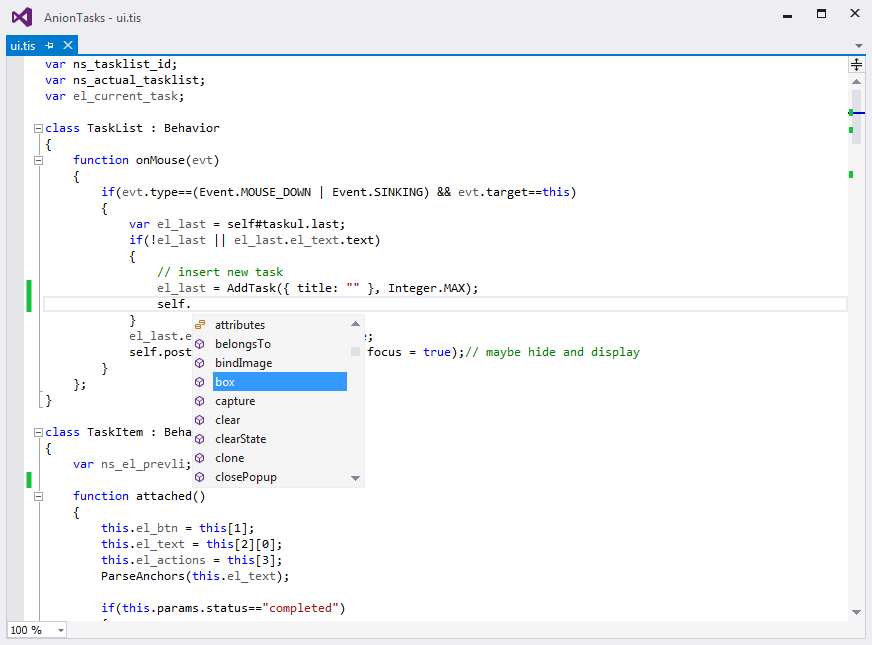

Omni Code brings a full-featured TIScript editor and enhancements for writing your HTML based code for Sciter technology.
(This is the VS 2015 version; the VS 2013 version is available
HERE
)
View on-line presentation of all the features
Go to official website
See changelog
